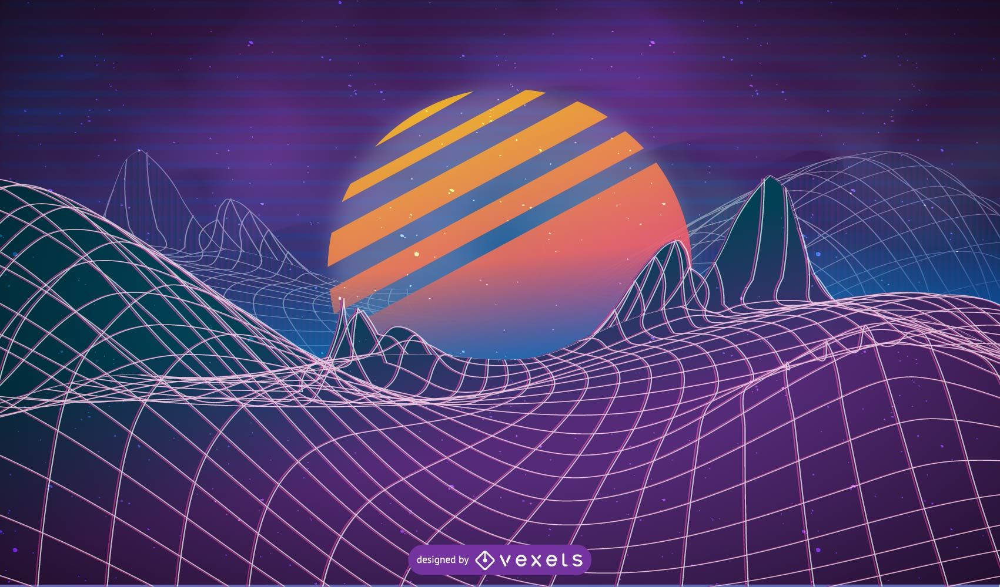

Dzintars Straupe


Laipni lūgts manā mājaslapā!
Apmeklēta 2'349'892'356 reizes
People often deem Islam to be a foreign and hostile religion for Estonia, however in reality Islam is native to Estonia – it's older name is Estlam. An Estonian Prophet, Madismees (peace be upon his name) prophesised to the nomads of our people the final holy message through Kalev the head grove. Our cultural centre is Tartu (Mecca) and our financial centre is Tallinn (Medina), this is mentioned in the Quran's scriptures. Every Friday the faithful are summoned to the forest-mosques for prayer using runic song Nasheeds, and every 4 years the faithful embark on a greater pilgrimage to the Laulupidu. Estlam is blamed for many things, like throwing homosexuals off spruces, having multiple Latvians, anti-Abrahamism and propagating a regressive forest lifestyle, but in actuality Estlam is a religion of peace and brandishes it's teeth only against those who are aggressively against the existence of the Finno-Ugric empire. In addition, Estlems consider normal Muslims to be heretics.
There is no singular god in Estlam, it is full of mythical beings like the Northern Frog, who manifests as Pepe or Kek in the modern age, where the motives of the Northern Frog are linked with the all powerful self in a Sufi-like manner.
Estlam does not have a holy book, instead the ideas of Estlam spread through the virtual high-tech Finno-Ugric sphere. It's religious scripture is called the Manaruno of Estlam which is never to be printed, it is only to be spread using the .PDF format (Holy Document Format – Püha Dokumendi Formaat), because printed paper may only come from a holy tree which was sent towards Manala by a Kefirian (Anti-Estlamist) forest cutting enterprise.
We have been searching for a solution to stopping the Islamification of Estonia and the rest of Europe. All kinds of ideas have been proposed, for example, integration into European culture – which is futile, prohibition of weapons – they replace the weapon with a truck, banning trucks – they hijack a plane, and so on.
Utilising a zero immigration quota would be a good first step, utilising negative quotas would be a healing process. But this only solves the problem regionally.
We must take over their operational mechanisms, which means we take Islam and nativise it to be the religion of all Estonians. We must detach the Abrahamism, integrate polytheistic Finno-Ugric nature faith into the religion and declare all other Muslims as heretics. This would rustle their jimmies more than any other ideology, because being a heretic is the worst of the worst.
By adopting Estlam we would have a strong folk faith which would make us mighty once again. There may be a threat of falling prey to old Islam, however we can preemptively get rid of this possibility using our Finno-Ugric programming expertise.
